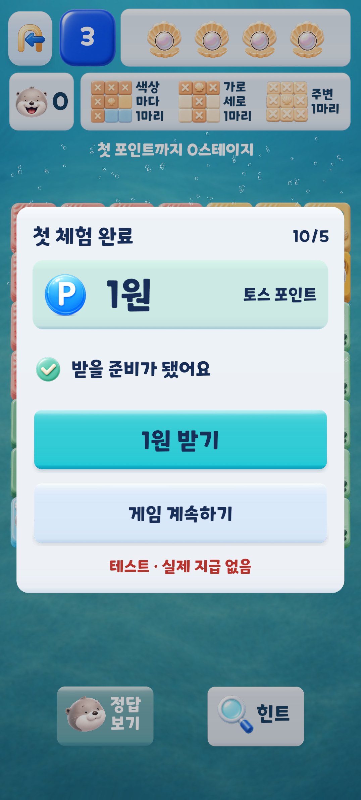
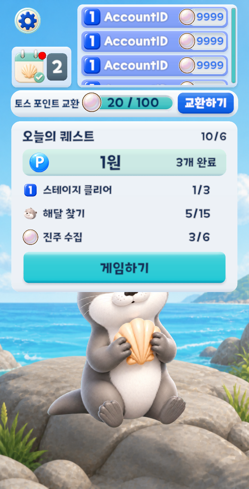
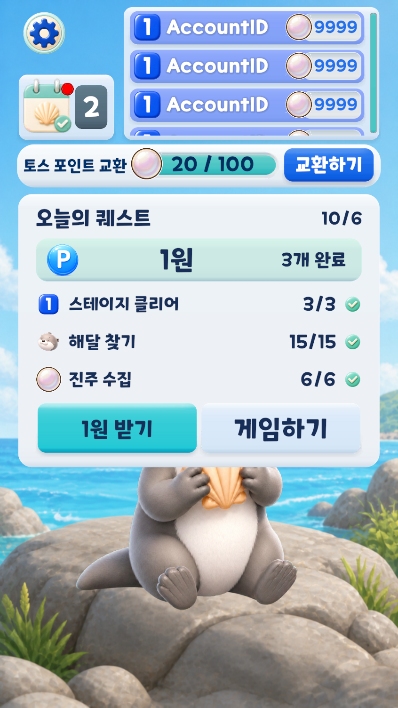

9/22–29 신규 322명 중 다음 날 방문 3명. 과거 코호트의 문제 신호로 사용했고 현재 대조군이나 개선 효과로 쓰지 않았습니다.
UNITY 6 · APPS IN TOSS · LIVE OPERATIONS
첫 플레이에서
다음 날 방문까지.
광고 로딩과 첫 판 안내를 먼저 수정하고 업데이트 뒤 광고 시청률 상승을 관찰했습니다. 이어 D1 재방문을 높이기 위해 포인트 튜토리얼과 데일리 퀘스트를 수정했습니다.
광고 시청률 상승 관측eCPM 모니터링D1 후속 구현·효과 측정 전
Toss 버전 개발 기록. 광고 시청률은 콘솔의 일별 값이며 D1과 실제 포인트 지급은 별도로 측정합니다.
01 / WHY THIS STARTED
낮은 D1 신호와
끊기는 첫 경험을 함께 봤습니다.
1스테이지 시작·클리어 활성 사용자 수입니다. 사용자 단위로 이어진 퍼널이 아니어서 완료율이나 이탈 원인으로 단정하지 않았습니다.
출발점 광고 흐름을 덜 막히게 하고, 첫 판의 규칙 이해·확정 보상·다음 날 방문 이유를 관찰 가능한 단계로 분리한다.
02 / 6-DAY DEVELOPMENT TIMELINE
관찰에서 수정으로,
수정에서 다음 가설로.
전면광고를 필요한 시점에 로드
Toss/WebGL에서 생성 시점 전면광고 preload를 제거했습니다. 사용자가 보기를 실행할 때 로드하고, 로딩 중 오버레이로 입력을 막습니다. 기존 첫 전면광고 레벨 15 규칙은 바꾸지 않았습니다.
첫 판 안내를 6개 지시에서 3개 행동으로 축소
해달 놓기 → X 표시 → 마지막 해달 찾기. 시작 해달 3개와 5×5 → 6×6 → 7×7, 1→2→3 직행을 만들었습니다. 규칙을 단계별로 익히도록 첫 3판의 진행을 연결했습니다.
포인트 튜토리얼과 초기 D1 안
7일·270 진주 목표는 로컬 옵션으로 철회했습니다. 첫 3판의 진행(남은 2/1), 세 번째 클리어, 명시적 1원 받기와 다음 KST 방문을 잇는 초기안을 만들었습니다. 10/5에는 초기 직접 배치 뒤 지급안을 3판 완료 뒤로 옮겼습니다.
다음 방문을 게임 참여 일일 퀘스트로 확장
첫 지급 뒤 반복 퀘스트는 스테이지 클리어 3회, 해달 15마리, 진주 6개를 모두 채운 뒤 Ready가 됩니다. 새 스테이지 진행만 세고 KST 날짜마다 진행을 초기화해, 같은 판 반복만으로 완료되지 않게 했습니다.
광고 변경의 관측 단위
기회·로드·표시·닫힘 이벤트를 연결했고, 전면광고 로드 대기 한도는 10초, 리워드는 8초입니다. 마지막 표시 시각을 저장하고 쿨다운을 60초에서 120초로 조정했습니다. 코드 변경 시점과 10/1 배포 이력은 개발 기록으로 연결했으며, 릴리스 ID로 독립 확인한 정보는 아닙니다.
03 / OBSERVED ADVERTISING RESULT
첫 업데이트 이후,
광고 시청률이 올랐습니다.
변경 전 일별 표시값
전환 구간
배포 이후 일별 표시값
| 날짜 | 광고 그룹 | 시청률 | eCPM(약) |
|---|---|---|---|
| 10/1 | 2 | 91.91% | 391원 |
| 10/2 | 2 | 94.40% | 483원 |
| 10/3 | 3 | 97.71% | 547원 |
| 10/4 | 2 | 94.55% | 3,240원 |
| 10/5 | 2 | 96.89% | 755원 |
eCPM · 계속 확인 중10/1–5 약 391–3,240원으로 일별 변동이 큽니다. 이후 수치를 이어서 확인합니다.
콘솔 시청률은 요청·노출 수로 다시 계산한 비율이 아닙니다. 9/30도 이미 올라 있었고, 그룹 수(이전 4개, 이후 대체로 2개), 형식 구성과 트래픽을 통제하지 않았으므로 이 변경 하나의 효과로 귀속하지 않습니다.
13일 콘솔 수치 CSV ↓콘솔 원본 캡처 ↗집계·전체 형식 기준. 원본 캡처의 노출 차트는 시청률 차트가 아닙니다.
04 / D1 FOLLOW-UP
D1 재방문을 위해,
다음 플레이의 목표를 만들었습니다.
해달 만나기
로비에서 시작을 선택하고 첫 3판을 진행합니다.
첫 포인트 안내
HUD로 남은 2·1단계를 보여주고 무엇을 언제 받는지 설명합니다.
명시적 수령
세 번째 클리어 뒤 1원 받기. Granted일 때만 성공으로 보입니다.
데일리 퀘스트
새 스테이지 3개 클리어·해달 15마리 찾기·진주 6개 수집을 모두 완료하면 1포인트를 요청할 수 있습니다. 진행은 KST 날짜마다 초기화합니다.



05 / ENGINEERING & VERIFICATION
실제 성공만 수령으로 남기고,
불확실한 요청은 멈췄습니다.
요청 전 예약
Pending으로 예약 저장한 뒤 요청합니다. Rejected·NotSent만 안전하게 재시도합니다.
자동 재전송 금지
Unknown·Pending은 재로드·자정에도 보존합니다. 확인 저장 실패도 Pending을 유지합니다.
기록 보존
기존 지급·예약 기록을 보존하고 이력이 없는 오래된 조기 Ready만 Intro로 복구합니다.
10/5 에디터 검증 기록
당시 15개 도메인 경로, 타일 색 23개 검사, 3판 후 Ready 재시작 보존, 컴파일 오류 0개를 확인했습니다. 10/6 일일 퀘스트 화면은 정적 UI 미리보기입니다.
에디터에서는 실제 지급을 호출하지 않았습니다. 로컬 예약만으로 재설치·다중 기기의 중복 지급을 보장할 수 없으며, D1과 실제 지급은 라이브 측정 대상입니다.
검증 범위 보기
자동 X·입력 제한·추론 후보와 정답 일치·3단계 독립 풀이를 확인했습니다. 후속 D1 기능의 실기기 터치 입력·실제 지급·배포 효과는 별도 확인 대상입니다.
06 / NEXT MEASUREMENTS
광고 결과는 계속 보고,
D1은 별도로 판정합니다.
| 구분 | 확인할 값 | 현재 |
|---|---|---|
| 광고 | 시청률, eCPM, 형식·그룹·트래픽 맥락 | 일별 관찰 중 |
| D1 | D1 방문, D1 스테이지 시작·클리어 | 측정 전 |
| 포인트 | D0 성공, 첫 수령 시간, 비용·중복·실패 | 측정 전 |
다음 판단 기준
빌드와 온보딩 버전이 같은 신규 사용자 코호트에서 D1 방문과 실제 플레이를 함께 확인합니다. 데일리 퀘스트의 진행·완료·수령도 연결해 어디에서 흐름이 끊기는지 보고, eCPM은 광고 형식별 추이와 함께 계속 확인합니다.